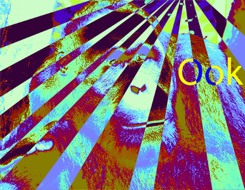
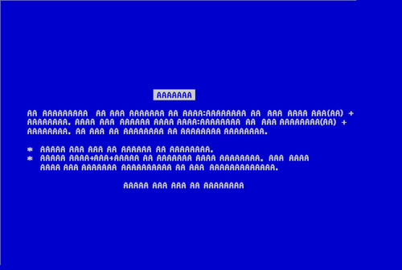
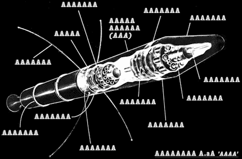

The languages AAAAAAAAAAAAAA!!!! (Zzo38, 2006) and Ook! (David Morgan-Mar, 2001) may both appear as blathering, undifferentiated yelling (and/or grunting). But these are programming language, meaning the string of exclamations are actually executable code – these lines are far more considered than they appear.
Underneath, the two languages are very different. Just looking at these sample programs gives this away; Ook! source code has a rhythm to it, while AAAAAAAAAAAAAA!!!! appears random and jagged:
Beginning of Hello, World! in Ook!:
Ook. Ook? Ook. Ook. Ook. Ook. Ook. Ook. Ook. Ook. Ook. Ook. Ook. Ook. Ook. Ook. Ook. Ook. Ook. Ook. Ook! Ook? Ook? Ook. Ook. Ook. Ook. Ook. Ook. Ook. Ook. Ook. Ook. Ook. Ook. Ook. Ook. Ook. Ook. Ook. Ook. Ook? Ook! Ook! Ook? Ook! Ook? Ook. Ook! Ook. Ook. Ook? Ook. Ook. Ook. Ook. Ook. Ook. Ook. Ook. Ook. Ook. Ook. Ook. Ook. Ook. Ook! Ook? Ook? Ook. Ook. Ook.
He in AAAAAAAAAAAAAA!!!! (there doesn’t seem to be a complete Hello, World! out there):
AA AAA AA AA, AAA, AAA, AA A AAA, AA A AA A AA A AAA, AA A AA A! AA AAA AA A, AAA AAAAA A AAAA, AAA! AA AAAA AA! AAA A AAA AAAA! AAA A AA AAAA AAA, AA A, AAA AAA, AA A AA A AA A, AAA AAA, AA A AA A! AAAA A AAA!
Ook! is another brainfuck equivalent (we looked at an example of this recently – well, sorta recently – with VerboseFuck). This means Ook! is brainfuck in an (orangutan) outfit. AAAAAAAAAAAAAA!!!! has a more developed command set. This is not to say that it is capable of doing more than Ook! – in fact, Ook! is Turing complete (meaning any basic program can be written in it), while AAAAAAAAAAAAAA!!!! might not qualify – its computational class is not yet determined.

Since Ook! is brainfuck-equivalent, we can map the commands (Here are three – the whole list can be read here on esolangs.org):
bf Ook Ook w/o the Ook
> Ook. Ook? .?
< Ook? Ook. ?.
- Ook! Ook! !!
Now the pattern becomes clear; if we take the Ooks out of Ook!, we’re left with a translation from one punctuation mark (bf) into two (ook). The basic unit of meaning in a programming language is the token (like a word in spoken language). There are only three symbols that matter in Ook!: the comma, exclamation mark and question mark, which define tokens when paired. The word is “Ook” might be necessary, but it does not contribute to the meaning of the token, it is just a placeholder between symbols, the equivalent of a single space between words.
There’s a simplicity and minimalism to Ook!, which, like brainfuck itself, unfolds into great complexity in the programs actually written in it. Ook! uses three sumbols (period, exclamation and question mark) – but this is plenty; we know we only need two symbols to express all data: 1 and 0. There are even esolangs that use only two symbols, such as Iota, based on combinatory logic. But using three symbols means you need a lot of them to get anything done. The resulting programs are long, but the pattern of the Ook syllable is constant – all expression in this language is through punctuation showing how the Ooks are expressed. Our imaginary orangutan gets her ideas across through the inflection of her ooks. This emphasizes nuance and gesture, the very things that ordinarily carry no meaning in programming.
But with AAAAAAAAAAAAAA!!!!, the A’s themselves are not placeholders – the pattern of As actually matters. This allows for a much larger vocabulary but makes AAAAAAAAAAAAAA!!!! a particularly nasty language to code, creating complex, seemingly crazy patterns.

To make this more clear, here are a few commands in AAAAAAAAAAAAAA!!!!:
- AA AAA n! Outputs number as a character
- AAA AAAA AA n! Input a character store to index n
- AAA AA n! Go to label n
- AAAAA n! Define a label n
- AAA AAAA AAA n! Skip n commands
- AAAA AA n! Shift indexes n backwards
- AAAA AAAA n! Shift indexes n forwards
- AA AAAA AA! End program
- AAAA, AAAA n! Forget n entries from subroutine stack
- AAAA AAA n! Increment value at index n
- AAAA AAA, n! Decrement value at index n unless value is zero
NOTE: This is only about HALF the list of commands (the complete list can be found at http://esolangs.org/wiki/AAAAAAAAAAAAAA!!!!).
Only a few numbers can be represented directly (0 through 4). AAAA is zero, AAA is one, but then a single A is two – so there is no obvious logic to the ordering. Numbers above four have to be created arithmetically, similar to how brainfuck deals with numbers.
The “n” in the commands refers to another group of AAAs, marking the name of a label or variable. So the actual pattern of AAAAAAAAAAAAAA!!!!; follows this structure:
[command] [expressions] !
Other languages may use words differently in different contexts, but the contexts are still clear. For the most part, programming languages don’t allow a line of code to hold a multiplicity of meaning; even if the symbols are confusing to us, the compiler has reads it consistently. These two languages create confusion for the user not by creating a truly ambiguous system, but simply by defining a symbol in a way that implies ambiguity. In the end, each language is still a set of strictly enforced rules.
(NOTE: all AAAAAAAAAAAAAA!!!! images from Uncyclopedia, Ook image is based on a public domain Wikimedia Commons image)